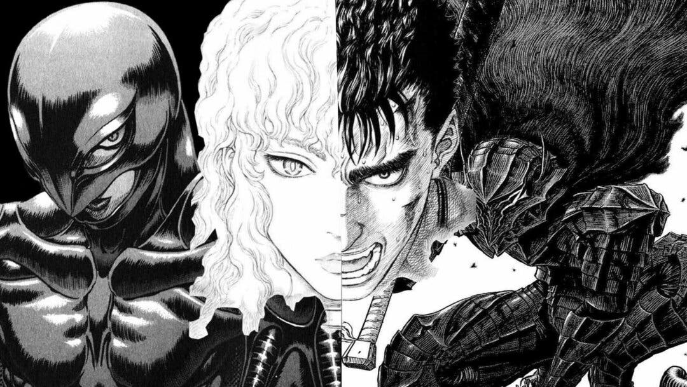

Berserk es un manga publicado por primera vez en Agosto del 1989 por Kentaro Miura (1966-2021) junto a la revista Animal House (1989-1992) y Young Animal (1992-actualidad).
El manga nos cuenta la historoia de Guts, un mercenario qu va de batalla en batalla sin razón alguna, hasta que un dia se encuentra con una banda de mercenarios llamada La Banda del Halcón. En ella se encontrará con personas que le haran ver la vida de una formaiferente a la que el vivió.
Esta historia se cuenta con toques de fantasia, violencia, sexo, pederastia, ,muerte,...